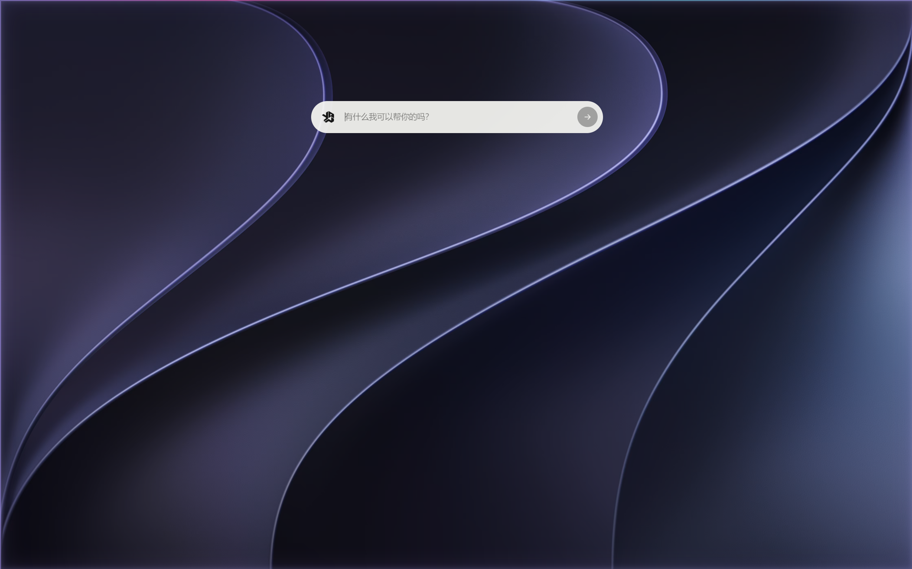

GLM · 智谱 AI
首选视觉中继
调用顺序GLM-5V Turbo → GLM-4.6V Flash → GLM-4.1V Thinking Flash → GLM-4V Flash
费用完全免费
网络无需 VPN；连接失败时先检查 API Key 和网络状态
官网https://open.bigmodel.cn/
查找、安装并管理 Agent 可调用的能力。
连接本地或远程工具，让 Agent 获得可验证的执行能力。
测试连接、启停服务并查看启动命令。
按间隔或指定时间运行 Agent 任务，最小化到托盘后仍会执行。
查看运行频率、最近结果并手动触发任务。
 PowerShell 7
PowerShell 7
版本信息与本次更新
选择要连接的模型服务。
凭据只保存在当前设备。
可填写官方 API、CC Switch、中转站或自建 OpenAI 兼容网关。
仅用于通义千问 DashScope 原生图片与视频接口；默认业务空间可留空。
留空时使用 Base URL 自动补全。
图片端点留空时按 Base URL 自动使用 /images/generations 与 /images/edits。
已配置厂商的模型会按用途归类显示。
让不支持读图的文本模型也能可靠理解图片和浏览器截图。
当主模型不能直接接收图像时，Yan 会把图片交给视觉模型读取，再把可核验的事实描述交回主模型继续工作。视觉中继只负责观察和转述，不执行用户任务；图片生成成功后不会自动重复读图。
首选视觉中继
GLM 失败后的后备中继
只需配置其中一家即可启用视觉中继。
遇到 429、5xx 或临时网络故障，Yan 会按上面的顺序自动切换；普通参数错误不会伪装成成功。
控制 Agent 可执行的操作权限。
最多保存 4 种，启用项会用于 Agent 的工作过程与最终回复。
关闭主窗口后，Yan Agent 仍可从系统托盘驻留并被全局快捷键唤醒。

启动后自动开放局域网端口，手机浏览器访问即可遥控 Agent。
cmd 并回车ipconfig，在当前网络连接下找到 IPv4 地址手机端连接时需输入此密码
v1.4.0
面向真实工作区的桌面端自主 Agent
Electron 31 · Windows · MIT License
删除后无法恢复该任务及其对话记录。
仅从左侧任务列表移除，不会删除本机文件或任务记录。
删除后 Agent 将无法继续调用它，需要重新安装才能恢复。
Agent 将不再为常规操作请求确认，并可使用绝对路径访问本机文件。仅在你完全信任当前任务、模型和工作区时开启。
你在设置中关闭的文件读写与网络权限仍然生效；高风险系统命令仍会被拦截。